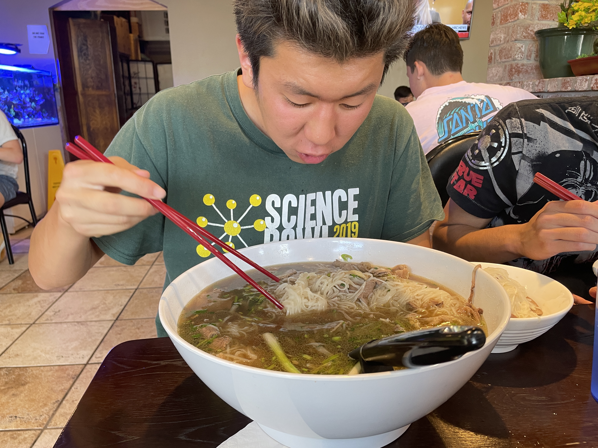

|
Jay Paek
|
 |
Jay Paek
Undergraduate Student at Unversity of California, San Diego (UCSD)
San Diego, California, United States
Email: jayspaek@gmail.com
|
About me
Education
M.S. in Electrical Engineering @ UCSD, Sep. 2023 - Dec. 2025
B.S. in Electrical Engineering @ UCSD, Aug. 2022 - Dec. 2024
Research Interests
Engineering: Dynamical Systems, Optimization, Robotics, Sensor Fusion, Control Theory
Mathematics: Cool Math Problems, Numerical Analysis, Convex Analysi
|